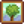
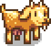

Yemekler
- Tamamlanmış bir yemek koleksiyonu listesi için Koleksiyonlar#Yemekler sayfasını inceleyin.
Yemekler, genelde ilk Çiftlik Evi geliştirmesinden sonra evde pişirilebilirler ve bir oyun mekaniğidir. Bu ev geliştirmesinde bir tezgah ve buzdolabı bulunduran bir mutfak eklenir. Tezgahta yemek pişirme arayüzü açılabilir ve buzdolabı da sandığa benzer olarak 36 yuvalık bir depodur. Buzdolabı, yemek pişirme arayüzüne bağlıdır. Tıpkı oyuncunun envanterine bir eklentiymiş gibi düşünülebilir. Yemek tarifi pişirirken yalnızca oyuncunun envanterindeki, buzdolabındaki veya Küçük Buzdolabındaki malzemeler kullanılabilir.
Alternatif olarak Toplayıcılık seviye 3'e ulaşıldığında herhangi bir yerde yemek pişirmeye yarayan bir Kamp Ocağı kullanılabilir.
Oyuncu, bir yemeği pişirmek için ilk önce tarifini öğrenmelidir. Sahanda yumurta istisnadır ve oyunun başında zaten öğrenilmiş olur. Kilitli tarifler, kararmış bir şekilde ve açıklaması "???" şekilde gözükür. Malzemeleri eksik olan bilinen tarifler de kararmış bir şekilde gözükür ancak açıklamasında tarif hakkında bilgi sağlanır. Eksik olan malzemeler ise kırmızı renkli yazıyla gösterilir. Tarif için gerekli olan bütün malzemeler oyuncunun envanterinde veya buzdolabında bulunuyorsa (farklı malzemeler farklı yerlerde bulunabilir) o zaman tarifin ikonu normal bir şekilde gözükür.
Etkiler
Aynı anda yalnızca bir yemeğin etkileri aktif olabilir. Bu yüzden etki sağlayan bir yemeği yemek, önceki yenilen yemeğin etkilerini kaldırır ve yeni yenilen yemeğin etkileri yerine geçer. Yeni yenilen yemekte hiçbir etki yoksa mevcut etkiler kaybolmaz. İçecek etkileri ayrıdır, bu yüzden etki veren bir içecek (Üç Tekli Espresso, Kahve, Yeşil Çay veya Zencefilli Gazoz) içilirse bir yemeğin etkileri kaybolmaz.
Etki süreleri her yemek ve içecek için değişir (aşağıdaki tabloyu inceleyin)[1] ancak bir yemek veya içecekti bütün etkilerin süreleri aynıdır (Mürekkepli Makarna istisnadır). Qi Çeşnisi kullanmak, etki sürelerini %50 artırır.
Başarımlar
Yemek yapmak ile ilgili üç başarım bulunur.
- Aşçı (10 farklı tarif pişir)
- Usta Aşçı (25 farklı tarif pişir)
- Gurme (Her tarifi pişir.)
Qi Çeşnisi
Qi Çeşnisinden Qi'nin Ceviz Odası'ndan  10 karşılığında 10 tane alınabilir ve pişirilen yemeği Altın kalite yapar, sağlık ve enerji değerlerini %80 ve satış fiyatını %50 artırır. Ayrıca yemekteki etkileri (Hız etkisi hariç) bir seviye artırır. Örneğin +4 balıkçılık veren Deniz Köpüğü Tatlısı, Qi Çeşnisi ile hazırlanırsa +5 balıkçılık verir. Yemeği pişirirken envanterde, buzdolabında veya Küçük Buzdolabında bulunuyorsa otomatik olarak kullanılır. Qi Çeşnisi tükenirse "Elindeki tüm Qi çeşnisini kullandın." bildirimi gönderilir.
10 karşılığında 10 tane alınabilir ve pişirilen yemeği Altın kalite yapar, sağlık ve enerji değerlerini %80 ve satış fiyatını %50 artırır. Ayrıca yemekteki etkileri (Hız etkisi hariç) bir seviye artırır. Örneğin +4 balıkçılık veren Deniz Köpüğü Tatlısı, Qi Çeşnisi ile hazırlanırsa +5 balıkçılık verir. Yemeği pişirirken envanterde, buzdolabında veya Küçük Buzdolabında bulunuyorsa otomatik olarak kullanılır. Qi Çeşnisi tükenirse "Elindeki tüm Qi çeşnisini kullandın." bildirimi gönderilir.
Tarifler
| Görsel | İsim | Açıklama | Malzemeler | Enerji / Sağlık | Etki(ler) | Etki(lerin) Süresi | Tarif Kaynağı | Satış Fiyatı | |||
|---|---|---|---|---|---|---|---|---|---|---|---|
| Sahanda Yumurta | Göze benzeyen yumurta. | Yok | Yok | Zaten mevcut | |||||||
| Omlet | Aşırı yumuşak. | Yok | Yok |
|
|||||||
| Salata | Sağlıklı bahçe salatası. | Yok | Yok |
|
|||||||
| Peynirli Karnabahar | Çok güzel kokuyor! | Yok | Yok |
|
|||||||
| Fırında Balık | Fırına atılıp sebzelerin üzerine yerleştirilen balık. | Yok | Yok |
|
|||||||
| Yaban Havucu Çorbası | Yeni pişmiş, sağlığa yararlı bir çorba. | Yok | Yok |
|
|||||||
| Türlü | İçinde bol bol besin maddesi var. | Yok | Yok |
|
|||||||
| Bütün Kahvaltı | İnsanı yüklenmeye hazır hale getirir! |
|
|||||||||
| Kalamar Tava | Sakız gibi. | Yok | Yok |
|
|||||||
| Gizemli Çörek | İçinde ne var ki? | Yok | Yok |
|
|||||||
| Şanslı Öğün | Özel küçük bir yemek. |
|
|||||||||
| Mantar Kızartma | Dünyevi ve aromatik. |
|
|||||||||
| Pizza | Ünlü olmasının bir sebebi var. | Yok | Yok |
|
|||||||
| Fasulye Yahnisi | Kesinlikle sağlıklı bir yemek. |
|
|||||||||
| Soslanmış Tatlı Patates | Tatlı ve doyurucu... İçindeki şeker karamel tadını andırıyor. | Yok | Yok |
|
|||||||
| Sazan Kızartma | Tatsız ve yağlı. | Yok | Yok |
|
|||||||
| Mücver | Kızıl kahverengi ve de gevrek! |
|
|||||||||
| Gözleme | İki katı kabarmış, yumuşacık gözleme. |
|
|||||||||
| Pişmiş Somon | Limon da sıkıldı mı çok özel bir hal alır. | Yok | Yok |
|
|||||||
| Balıklı Tako | Çok lezzetli görünüyor. |
|
|||||||||
| Çıtır Levrek | Vay be, kırıntılar harika. |
|
|||||||||
| Patlangaç Biber | Kesilmiş acı biberler peynirle doldurulmuş. |
|
|||||||||
| Ekmek | Gevrek baget ekmek. | Yok | Yok |
|
|||||||
| Tavuklu Ceviz Çorbası | İnanılmaz bir lezzeti var! |
|
|||||||||
| Alabalık Çorbası | Çok tuzlu. |
|
|||||||||
| Çikolatalı Pasta | Yoğun kremayla zenginleştirilmiş ve nemlendirilmiş. | Yok | Yok |
|
|||||||
| Pembe Pasta | Üstünde kalp şeklinde küçük şekerler var. | Yok | Yok |
|
|||||||
| Uşkun Turtası | Hım... Keskin bir tadı var! | Yok | Yok |
|
|||||||
| Kurabiye | Ağız kaslarını çalıştırıyor. | Yok | Yok |
|
|||||||
| Çubuk Makarna | Eskinin en sevilenlerinden. | Yok | Yok |
|
|||||||
| Yılanbalığı Tava | Hem yağlı hem lezzetli. |
|
|||||||||
| Baharatlı Yılanbalığı | Bayağı baharatlıymış! Yerken dikkat etmeli. |
|
|||||||||
| Saşimi | İnce ince dilimlenmiş çiğ balık. | Yok | Yok |
|
|||||||
| Dilim Maki | Yosunla kaplanmış balık ve pirinç. | Yok | Yok |
|
|||||||
| Tortilla | Tek başına ya da arasına bir şeyler koyularak yenilebilir. | Yok | Yok |
|
|||||||
| Kızıl Tabak | Antioksidanlarla dolu. |
|
|||||||||
| Parmesanlı Patlıcan | Ekşi, sıradan ve mükemmel. |
|
|||||||||
| Sütlaç | Yumuşak ve tatlı. Yemesi de pek keyifli. | Yok | Yok |
|
|||||||
| Dondurma | Dondurma sevmeyen birini bulmak çok zor. | Yok | Yok |
|
|||||||
| Yaban Mersinli Turta | Hoş ve canlandırıcı. | Yok | Yok |
|
|||||||
| Güz Armağanı | Tadı aynı adını aldığı mevsim gibi. |
|
|||||||||
| Kabak Çorbası | Mevsimin en iyisi. |
|
|||||||||
| Süper Öğün | Enerji verici bir öğün. |
|
|||||||||
| Kızılcık Sosu | Şölenlerde tatmalık. |
|
|||||||||
| Doldurma | Ah... sıcak ekmeğin ve adaçayının kokusu yok mu... |
|
|||||||||
| Çiftçi Öğünü | İnsanı ayakta tutmaya yeter. | ||||||||||
| Açburger | Tam kaşiflere göre bir atıştırmalık. |  Toplayıcılık Seviye 8 | |||||||||
| Deniz Öğünü | Soğuk deniz havasında insanın içini ısıtır. | ||||||||||
| Madenci Şekeri | İnsana enerji verir. | ||||||||||
| Kök Tabağı | Daha fazlası için toprağı kazdırır. | ||||||||||
| Üç Tekli Espresso | Sıradan kahveye oranla daha ağırdır! | ||||||||||
| Deniz Köpüğü Tatlısı | Bu sırlı tatlı yiyeni gerçekten deniz zihniyetine sokar! | ||||||||||
| Su Yosunu Çorbası | Biraz iğrenç görünüyor. | Yok | Yok |
|
|||||||
| Soluk Etsuyu | Birazcık kükürt tadı veren leziz et suyu. | Yok | Yok |
|
|||||||
| Erikli Muhallebi | Geleneksel bir bayram tatlısı. | Yok | Yok |
|
|||||||
| Enginar Ezmesi | Soğuk ve ferahlatıcı. | Yok | Yok |
|
|||||||
| Vogda Kızartma | Pirincin üzerine sebzelerin ince ince doğranmasıyla hazırlanan sebze yemeği. | Yok | Yok |
|
|||||||
| Kavrulmuş Fındık | Kavurma işlemi sırasında zengin orman kokusu havayı doldurur. | Yok | Yok |
|
|||||||
| Kabak Tatlısı | Çırpılmış yumuşak kabak, pullu ekmek kabuğuna konulur. | Yok | Yok |
|
|||||||
| Turp Salatası | Çıtır çıtır turplar! | Yok | Yok |
|
|||||||
| Meyve Salatası | Yaz meyvelerinin bir araya gelmesiyle oluşan lezzet topluluğu! | Yok | Yok |
|
|||||||
| Böğürtlen Kobler | Bunun gibisini pek bulamazsınız. | Yok | Yok |
|
|||||||
| Kızılcık Şekeri | Acı meyveyi unutturacak kadar tatlı. | Yok | Yok |
|
|||||||
| İtalyan Sandviçi | Üzerine kavrulmuş domates sürülen gevrek beyaz ekmek. | Yok | Yok |
|
|||||||
| Kırmızı Lahana Salatası | Hafif, taze ve oldukça sağlıklı. | Yok | Yok |
|
|||||||
| Eğrelti Otlu Pilav | Sotelenmiş eğreltiotuyla birlikte sunulan lapa pilav. Birazcık yavan kalmış. | Yok | Yok |
|
|||||||
| Haşhaşlı Kek | İnsanı yatıştıran bir yanı var. | Yok | Yok |
|
|||||||
| Balık Türlüsü | Soğuk geceleri suda geçirdikten sonra ısınmak harika olsa gerek. |
|
|||||||||
| Balık Buğulama | Deniz gibi kokuyor. Gerçi tadı çok daha güzel. |
|
|||||||||
| Kızarmış Salyangoz | Tereyağıyla ıslatılmış salyangozlar pişirilince mükemmel bir hal alır. |
|
|||||||||
| Istakoz Çorbası | Bu lezzetli çorba Willy'nin gizli aile tarifinden yapılıyor. |
|
|||||||||
| Özlü Gözleme | Akçaağacın zenginlikleriyle kaplanmış tatlı gözleme. |
|
|||||||||
| Yengeçli Kek | Yengeç, ekmek kırıntıları ve yumurta karıştırılarak köfte haline getirilir, sonra da kızıl kahverengi bir hal alana kadar kızartılır. |
|
|||||||||
| Karides Kokteyli | Yeni yakalanmış karidesten yapılan pahalı bir atıştırmalık. |
|
|||||||||
| Zencefilli Gazoz | Mide üzerindeki yatıştırıcı etkisiyle bilinen leziz bir gazoz. | Yanardağ Zindanı'ndaki Cüceden |
|||||||||
| Muzlu Muhallebi | İnanılmaz bir tropik tada sahip muhallebi tatlısı. |
|
|||||||||
| Mangolu Pilav | Tatlı mango ve hindistan cevizi eklenerek özel bir yemeğe dönüştürülen pilav. |
|
|||||||||
| Poi | Sıcağı sıcağına yendiğinde özel bir tadı olan geleneksel bir yemek. | Yok | Yok |
|
|||||||
| Tropik Köri | Ananas içinde sunulan kokusuyla ünlü bir köri. | ||||||||||
| Mürekkepli Makarna | Olumsuz etkilere karşı geçici korunma sağlar. | ||||||||||
| Yosun Çorbası | Biraz iğrenç görünüyor. | Yok | Yok | Toplayıcılık Seviye 3 |
Malzemeler
Oyundaki bütün 80 yemeği de pişirmek için minimum 88 farklı tür öge gerekir.
- 26 adet ekin ürünü
- 13 adet toplanabilir öge
- 4 adet ağaç meyvesi
- 2 adet hayvan ürünü
- 4 adet zanaat ürünü
- 3 adet çeşitli ögeler (akçaağaç pekmezi, mürekkepbalığı mürekkebi, yosun)
- 17 adet balıkçılıktan bulunan öge
- 8 adet yengeç çömleği ögesi
- 5 adet Pierre'in Bakkalı'ndan satın alınan öge
- 6 adet malzeme olarak kullanılan yemek
Tabloya göre oluşturulan yemekler, diğer oluşturulabilir yemekler için kullanılır. Örneğin, Mücver yapmak için 1 Patates kullanılır ve Mücver de Bütün Kahvaltı yapmak için kullanılır. Deniz Öğünü için de Mücver kullanıldığından 1 tane daha Patates kullanılması gerekir. Tamamlandığında bütün yemekler pişirildiği için Gurme başarımı elde edilir ancak diğer yemekleri yapmakta kullanıldıkları için oyuncunun elinde Mücver bulunmaz.
Ekinler
| Görsel | İsim | Gereken Miktar | Mevsim | Olgunlaşma Süresi | Notlar | Gerektiği Yemek |
|---|---|---|---|---|---|---|
| Yaban Havucu | 2 | Bahar | 4 gün | |||
| Lahana | 2 | Bahar | 6 gün | Harvest with Scythe | ||
| Patates | 2 | Bahar | 6 gün | %20 ihtimalle ekstra patates de verir. | ||
| Maviruh | 1 | Bahar | 7 gün | |||
| Yeşil Fasulye | 2 | Bahar | 10 gün | Asma kafeste büyür. 3 günde bir ürün verir. | ||
| Karnabahar | 1 | Bahar | 12 gün | Dev Ekin olarak da çıkabilir. | ||
| Uşkun | 1 | Bahar | 13 gün | Vahadan da tohumu satın alınabilir. | ||
| Sarımsak | 2 | Bahar | 4 gün | 2. yılda alınabilir. | ||
| Acı Biber | 3 | Yaz | 5 gün | 3 günde bir ürün verir. | ||
| Turp | 2 | Yaz | 6 gün | |||
| Haşhaş | 1 | Yaz | 7 gün | |||
| Domates | 8 | Yaz | 11 gün | 4 günde bir ürün verir. | ||
| Kavun | 2 | Yaz | 12 gün | Dev Ekin olarak da çıkabilir. | ||
| Yaban Mersini | 2 | Yaz | 13 gün | Her hasatta birden fazla yaban mersini verir. 4 günde bir ürün verir. | ||
| Mısır | 2 | Yaz/Fall | 14 gün | 4 günde bir ürün verir. | ||
| Kırmızı Lahana | 3 | Yaz | 9 gün | 2. yılda alınabilir | ||
| Çin Lahanası | 1 | Güz | 4 gün | |||
| Patlıcan | 2 | Güz | 5 gün | 5 günde bir ürün verir. | ||
| Horozibiği | 1 | Güz | 7 gün | Tırpan ile hasat edilir. | ||
| Kızılcık | 4 | Güz | 7 gün | Hasatta 2 Kızılcık verir. 5 günde bir ürün verir. | ||
| Tatlı Patates | 2 | Güz | 10 gün | |||
| Bal Kabağı | 3 | Güz | 13 gün | Dev Ekin olarak da çıkabilir. | ||
| Pancar | 1 | Güz | 6 gün | Vahadan da tohumu alınabilir. | ||
| Enginar | 2 | Güz | 8 gün | 2. yılda alınabilir. | ||
| Ananas | 1 | Yaz | 14 gün | |||
| Gölevez Kökü | 4 | Yaz | 10 gün |
Toplanılan Ögeler
Ağaç Meyveleri
| Görsel | İsim | Gereken Miktar | Kaynak | Mevsim | Gerektiği Yemek |
|---|---|---|---|---|---|
| Elma | 1 | Elma Ağacı | Güz | ||
| Kayısı | 1 | Kayısı Ağacı | Bahar | ||
| Muz | 1 | Muz Ağacı | Yaz | ||
| Mango | 1 | Mango Ağacı | Yaz |
Hayvan Ürünleri
Not: Süt isteyen tariflerde Süt, Büyük Süt, Keçi Sütü veya Büyük Keçi Sütü kabul edilir. Yumurta isteyen tariflerde Boşluk Yumurtası, Altın Yumurta, Ördek Yumurtası, Deve Kuşu Yumurtası dahil bütün yumurtalar kabul edilir.
| Görsel | İsim | Gereken Miktar | Kaynak | Notlar | Gerektiği Yemek |
|---|---|---|---|---|---|
| Yumurta | 8 |  Tavuklar, Ördekler, Boşluk Tavukları, Altın Tavuklar, Deve Kuşları |
|||
| Süt | 12 |   İnekler, Keçiler |
Süt Kovası ile alınır |
Zanaat Ürünleri
Not: Kahve pişirmek yerine Yıldızkaydı Salonu'ndan  300g karşılığında da satın alınabilir.
300g karşılığında da satın alınabilir.
| Görsel | İsim | Gereken Miktar | Kaynak | Koyulan Öge | Üretim Süresi | Gerektiği Yemek |
|---|---|---|---|---|---|---|
| Peynir | 3 | Peynir Ezeceği | 3,3 saat | |||
| Mayonez | 2 | Mayonez Makinesi | 3 saat | |||
| Boşluk Mayonezi | 1 | Mayonez Makinesi | 3 hours | |||
| Kahve | 3 | Fıçı | 2 saat |
Çeşitli
| Görsel | İsim | Gereken Miktar | Kaynak | Üretim Süresi | Gerektiği Yemek |
|---|---|---|---|---|---|
| Akçaağaç Pekmezi | 1 | Akçaağaç akıtmak | 7-8 gün | ||
| Mürekkepbalığı Mürekkebi | 2 | Mürekkep Çocuk veya Mavi Mürekkepten düşebilir, Mürekkepbalığı veya Gecekalamarı Balık Havuzunda üretilebilir. | Balık Havuzu nüfusuna bağlı olarak değişir. | ||
| Yosun | 20 | Yosun kaplı ağaçlar | Yok |
Balıkçılık
Not: Herhangi bir mevsimde Su Yosunu, Gelgit Havuzlarında da toplanılabilir. Yeşil Su Yosunu ve Beyaz Su Yosunu, Gizli Koru ve Madenlerdeki çeşitli canavarlardan da düşebilir.
| Görsel | İsim | Gereken Miktar | Konum | Zaman | Mevsim | Hava | Zorluk | Gerektiği Yemek |
|---|---|---|---|---|---|---|---|---|
| Ton Balığı | 1 | Okyanus | 06.00 – 19.00 | Yaz/Kış | Herhangi Bir | 70 | ||
| Sardalya | 2 | Okyanus | 06.00 – 19.00 | Bahar/Güz/Kış | Herhangi Bir | 30 | ||
| Mercanbalığı | 1 | Nehir | 06.00 – 02.00 | Tüm Mevsimler | Herhangi Bir | 35 | ||
| İri Ağızlı Levrek | 1 | Dağ Gölü | 06.00 – 19.00 | Tüm Mevsimler | Herhangi Bir | 50 | ||
| Renkli Alabalık | 1 | Nehir, Dağ Gölü | 06.00 – 19.00 | Yaz | 45 | |||
| Somon Balığı | 1 | Nehir | 06.00 – 19.00 | Güz | Herhangi Bir | 50 | ||
| Yassıbalık | 1 | Okyanus | 06.00 - 20.00 | Bahar/Yaz | Herhangi Bir | 50 | ||
| Alacakaranlık Sazanı | 1 | Dağ Gölü, Orman Göleti | 22.00 - 02.00 | Güz/Kış | Herhangi Bir | 55 | ||
| Sazanbalığı | 4 | Dağ Gölü, Orman Göleti, Lağım, Gizli Koru, Mutant Böcek Yuvası | Her Zaman | Tüm Mevsimler | Any | 15 | ||
| Güneşbalığı | 1 | River | 06.00 – 19.00 | Bahar/Yaz | 30 | |||
| Yılanbalığı | 2 | Okyanus | 16.00 – 02.00 | Bahar/Güz | 70 | |||
| Mürekkepbalığı | 1 | Okyanus | 18.00 – 02.00 | Kış | Herhangi Bir | 75 | ||
| Denizhıyarı | 1 | Okyanus | 06.00 – 19.00 | Güz/kış | Herhangi Bir | 40 | ||
| Balık (Herhangi Bir) | 2 | Herhangi Bir Yer | Her Zaman | Tüm Mevsimler | Herhangi Bir | Yok | ||
| Su Yosunu | 1 | Ocean | Anytime | Tüm Mevsimler | Any | 0 | ||
| Yeşil Su Yosunu | 5 | Çiftlik Göleti hariç her yer | Her Zaman | Tüm Mevsimler | Herhangi Bir | 0 | ||
| Beyaz Su Yosunu | 2 | Madenler, Lağım, Mutant Böcek Yuvası, Cadı'nın Bataklığı | Her Zaman | Tüm Mevsimler | Herhangi Bir | 0 |
Yengeç Çömleği Ögeleri
Not: Herhangi bir mevsimde Deniz Tarağı ve Midye, Kumsaldan da toplanılabilir. Yengeç, Madenlerdeki Taş yengeci veya Lav Yengecinden de düşebilir.
| Görsel | İsim | Gereken Miktar | Konum | Gerektiği Yemek |
|---|---|---|---|---|
| Istakoz | 1 | Okyanus | ||
| Deniz Tarağı | 1 | Okyanus | ||
| Kerevit | 1 | Tatlı Su | ||
| Yengeç | 1 | Okyanus | ||
| Midye | 1 | Okyanus | ||
| Karides | 2 | Okyanus | ||
| Salyangoz | 1 | Tatlı Su | ||
| Deniz Salyangozu | 2 | Tatlı Su |
Bakkal Ögeleri
Pierre'in Bakkalı'nda Pierre'den satın alınabilir.
Malzeme Yemekleri
Bu yemeklerin malzemeleri önceki listelerde gösterilmiştir. Başka yemeklerin malzemeleri olarak kullanabilirler.
| Görsel | İsim | Gereken Miktar | Malzemeler | Gerektiği Yemek |
|---|---|---|---|---|
| Sahanda Yumurta | 1 | |||
| Mücver | 2 | |||
| Gözleme | 1 | |||
| Tortilla | 2 | |||
| Ekmek | 3 | |||
| Omlet | 1 |
Kâr Edilebilir Yemekler
- Ayrıca bkz. Balığı Saşimiye Dönüştürme
Çoğu tarifin satış fiyatı malzemelerinin satış fiyatından/kârından az olsa da düşük kaliteli malzemeler kullanıldığında kâr edilebilir olan bazı yemekler vardır.
Not: Bazı balıkların Saşimiye dönüştürülmesi yerine "Yardım Aranıyor" görevlerinde kullanılamsı daha iyidir çünkü genelde balığın temel değerinin 3 katı kadar ödül alınır.
Aşağıdaki tarifler, düşük kaliteli malzemeler ile yapılırsa satarak kâr edilebilir:
Maksimum kâr için malzemeleri Kavanoz, Fıçı, Mayonez Makinesi veya Peynir Ezeceğine atmak her zaman daha iyi bir seçenektir. Not edilebilir tek istisnalar (su yosunu işlemenin tek yolu yemek yapmak olduğu için) Su Yosunu Çorbası (+ 40g) ve Soluk Etsuyudur (+
40g) ve Soluk Etsuyudur (+ 100g). 1.6'dan önce normal kalite kış kökü ile yapılmış Kök Tabağı kâr edilebilirdi (+
100g). 1.6'dan önce normal kalite kış kökü ile yapılmış Kök Tabağı kâr edilebilirdi (+ 5g). Ancak 1.6 ile birlikte artık her ikisi de Kavanoza koyulabilir ve tarif artık kâr edilebilir değildir.
5g). Ancak 1.6 ile birlikte artık her ikisi de Kavanoza koyulabilir ve tarif artık kâr edilebilir değildir.
Balıkları bir Balık Tütsüleyicide işlemek her zaman daha iyi bir seçenektir. Genel olarak yalnızca  28g'dan daha az değeri olan balıklar Saşimiye dönüştürüldüğünde kârlı olur. Örnek olarak Balıkçı veya Oltacı uzmanlığı yoksa yalnızca normal ve gümüş kalite veya Balıkçı uzmanlığı varsa yalnızca normal kalite Deniz Salyangozu örnek verilebilir. Oltacı uzmanlığı ile bütün balıklar Saşimiye dönüştürüldüğünde kâr veremez hâle gelir. Kömürün satış ve satın alma fiyatları da hesaba katılırsa Saşimiye dönüştürülmeye değer balık sayısı artar.
28g'dan daha az değeri olan balıklar Saşimiye dönüştürüldüğünde kârlı olur. Örnek olarak Balıkçı veya Oltacı uzmanlığı yoksa yalnızca normal ve gümüş kalite veya Balıkçı uzmanlığı varsa yalnızca normal kalite Deniz Salyangozu örnek verilebilir. Oltacı uzmanlığı ile bütün balıklar Saşimiye dönüştürüldüğünde kâr veremez hâle gelir. Kömürün satış ve satın alma fiyatları da hesaba katılırsa Saşimiye dönüştürülmeye değer balık sayısı artar.
Bu durumların yanı sıra, kâr amaçlı yeemk yapma ancak malzeme üretiminin işleme kapasitesini büyük ölçüde aşması halinde iyi bir hâle gelmektedir.
Görevler
"Qi'nin Yemeği" görevinde  100.000g değerinde pişirilmiş yemek gönderilmesi istenir. Bu görev sırasında yapılan yemeklerin isminin başında "Taze" olur (örn. Taze Sahanda Yumurta, Taze Omlet vb) ve görevden önce yapılan yemek ögeleriyle birleşemez.
100.000g değerinde pişirilmiş yemek gönderilmesi istenir. Bu görev sırasında yapılan yemeklerin isminin başında "Taze" olur (örn. Taze Sahanda Yumurta, Taze Omlet vb) ve görevden önce yapılan yemek ögeleriyle birleşemez.
Notlar
- Tarif için malzeme ararken aşağıdaki sıraya göre gider ve ayrıca sağ alt yuvadan sol üst yuvaya doğru sırayla arar:
- İlk önce oyuncunun envanteri,
- Ardından buzdolabı,
- Son olarak Küçük Buzdolabı.
- Düzenle butonu ile otomatik düzenlendiğinde sağ alt yuvaya ilk önce aynı tür ögenin düşük kalitelisi koyulacaktır. Ancak birden fazla öge kabul eden tariflerde istenilmeyen ögenin kullanılmaması için envanterde doğru sırada koyulmalıdırlar. Örneğin, herhangi bir balığı kabul eden Saşimi yaparken Ton Balığı kabul edilebilir ancak bunun yerine sağ alt yuvaya ilk önce Midye yerleştirilirse Saşimi tarifi için Midye kullanılır ve Ton Balığı da Balıklı Tako gibi daha iyi ve değerli bir tarif için kullanılabilir.
- Birden fazla Küçük Buzdolabı varsa oyun, bu buzdolaplarının yerleştirildiği kronolojik sıralamayı kaydeder ve son yerleştirilen buzdolabını seçer ve ardından ilkine doğru gider. Buzdolabının çiftlik evinin içinde nereye koyulduğu farketmez.
Hatalar
- Yalnızca mobil: Etki veren bir yemek yendikten sonra "önceki kaydı yükle" seçeneğini seçmek, etkileri önceki kayıda taşır. Böylece yemeği aslında hiç kaybetmeden yemeğin etkisi alınmış olur.
- Oyunda ekranın sağ üst köşesindeki etki gösterme alanı sınırlıdır (yaklaşık bir etki ikonunun 3,5 katı kadar). Bu alan dışında bulunan herhangi bir etki ikonunun kaynağı ve süresi görüntülenemez.
Referanslar
- ↑ Her yemeğin ve içeceğin etki süreleri Content\Data\ObjectInformation.xnb dosyasının 8. dizininde yazmaktadır. Verilen sayı 700 ile çarpılarak milisaniye cinsinden süresi bulunur. Formülü ise Buff::Buff oyun kodundadır.
Geçmiş
- v1.11 ve v1.3 arasındaki bir zamanda etkilerin süreleriyle alakalı bir hata düzeltildi.
- 1.3.27: Enginar Ezmesi, Kabak Tatlısı, Balık Türlüsü ve Istakoz Çorbası artık normal sütün yanı sıra Büyük Süt de kabul ediyor.
- 1.4: Karides Kokteyli, Deniz Köpüğü Tatlısı, Üç Tekli Espresso eklendi. Fasulye Yahnisinin etkisinin bozuk olması düzeltildi. Bütün dillerde tezgah arayüzü düzenlendi. Malzemelerin depolanabilmesi için Küçük Buzdolabı eklendi.
- 1.5: Muzlu Muhallebi, Zencefilli Gazoz, Mangolu Pilav, Poi, Tropik Köri, Mürekkepli Makarna eklendi. Tariflerde artık Keçi Sütü ve Büyük Keçi Sütü kullanılabilir.
- 1.6: Yosun Çorbası eklendi.